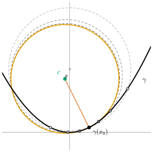
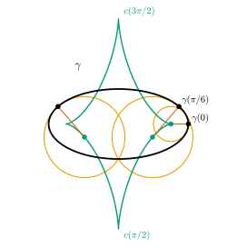
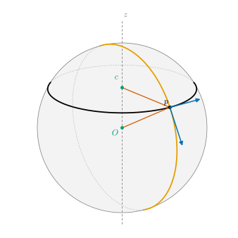

4.5 The Osculating Circle and the Center of Curvature
Goals
- \(\kappa_s \neq 0\)인 점에서 center of curvature, radius of curvature, osculating circle을 정의하고 계산할 수 있다.
- osculating circle이 곡선과 2차까지 맞닿는 유일한 원이며, 곡선 위의 가까운 세 점을 지나는 원의 극한임을 증명할 수 있다.
- \(\kappa_s\)의 부호가 곡선이 접선의 어느 쪽에 놓이는지 정함을 보일 수 있다.
- 공간 속 평면에 놓인 곡선에 이 결과를 옮겨, sphere 위 great circle과 circle of latitude의 curvature \(1/r\), \(1/(r\sin\theta_0)\)과 center of curvature를 구할 수 있다.
Prerequisites
- Definition 4.4.2 (signed curvature), Proposition 4.4.5 (signed curvature in a general parameter), Example 4.4.3 (circle and line, running example)
- Example 4.1.13 (circles of latitude and meridians on the sphere)
- Cauchy–Schwarz inequality(Theorem 1.5.5), extreme value theorem(Theorem 3.6.10), 1변수 Taylor's theorem(Lemma 2.2.16)
- 1변수 미적분의 Rolle's theorem과 L'Hôpital's rule
Motivation
Example 4.4.3에서 반지름 \(r\)인 원의 signed curvature가 \(\pm 1/r\)임을 보았고, Theorem 4.4.10에서 signed curvature가 상수인 곡선은 원뿐임을 보았다. 그렇다면 거꾸로, curvature가 \(\kappa_s(s_0) \neq 0\)인 점에서 곡선을 원으로 근사하면 그 원의 반지름은 \(1/\abs{\kappa_s(s_0)}\)이어야 하지 않을까? 이 절은 이 기대가 정확히 맞음을 보인다.
“곡선에 가장 잘 맞는 원”은 여러 방식으로 정의할 수 있다. 곡선 위의 가까운 세 점을 지나는 원을 그리고 세 점을 한 점으로 모으는 방법이 있고 (Figure 4.5.1), 곡선과의 차이가 가장 빨리 줄어드는 원을 고르는 방법도 있다. 두 방법은 같은 원을 준다. 그 원의 반지름이 \(1/\abs{\kappa_s}\)이다. 이렇게 해서 curvature는 “단위 길이당 접선이 도는 각”(Theorem 4.4.9)이라는 뜻에 더해 “가장 잘 맞는 원의 반지름의 역수”라는 뜻을 얻는다.

Definition of the Osculating Circle
Definition 4.5.1 (center of curvature and osculating circle). \(\gamma\colon I \to \R^2\)가 arc length로 parametrization된 plane curve이고 \(\kappa_s(s_0) \neq 0\)이라 하자.
를 \(s_0\)에서 \(\gamma\)의 center of curvature(곡률중심), \(1/\abs{\kappa_s(s_0)}\)을 radius of curvature(곡률반지름)이라 하고, 중심이 \(c(s_0)\)이고 반지름이 \(1/\abs{\kappa_s(s_0)}\)인 원을 \(s_0\)에서 \(\gamma\)의 osculating circle(접촉원)이라 한다. 일반 매개변수의 regular curve에서는 orientation을 보존하는 arc length parametrization으로 정한다. Section 4.4의 약속(Proposition 4.4.5 앞)을 따르면 식은 같은 모양 \(c(t) = \gamma(t) + \mathbf{n}_s(t)/\kappa_s(t)\)이다.
\(\kappa_s \lt 0\)이면 \(1/\kappa_s \lt 0\)이므로 center of curvature는 \(-\mathbf{n}_s\) 쪽에 있다. 어느 경우든 center of curvature는 곡선이 휘어 들어가는 쪽에 있다. 실제로 unit-speed curve에서는 \(\gamma'' = \mathbf{t}' = \kappa_s\mathbf{n}_s\)이므로 \(\mathbf{n}_s/\kappa_s = \kappa_s\mathbf{n}_s/\kappa_s^2\)이고,
이다. 이 식에는 \(J\)도 부호도 없다. 곡선의 orientation을 뒤집으면 \(\kappa_s\)와 \(\mathbf{n}_s\)의 부호가 함께 바뀌지만 \(\gamma''\)은 그대로이므로(Exercise 4.3.3), center of curvature와 osculating circle은 곡선의 orientation에 무관하다. 평면을 반사해도 마찬가지다. radius of curvature와 center of curvature는 signed curvature보다 “더 기하적인” 양이다.
Example 4.5.2. (a) 원 (running example). 반지름 \(r\)인 원을 반시계 방향으로 돌면 \(\kappa_s = 1/r\), \(\mathbf{n}_s = -\gamma/r\)이므로(4.4.3) \(c = \gamma + r(-\gamma/r) = 0\)이다. 모든 점의 center of curvature가 원의 중심이고 osculating circle은 원 자신이다. 원의 “curvature \(1/r\)”이 곧 “반지름 \(r\)”인 셈이다.
(b) 포물선. \(\gamma(x) = (x, x^2/2)\)에서 \(\kappa_s = (1 + x^2)^{-3/2}\)이고(Example 4.4.6(b)), \(\mathbf{n}_s = J(1, x)/\sqrt{1 + x^2} = (-x, 1)/\sqrt{1 + x^2}\)이다. 따라서
\[ \begin{aligned} c(x) &= (x,\ x^2/2) + (1 + x^2)^{3/2}\,\frac{(-x,\ 1)}{\sqrt{1 + x^2}}\\ &= \big(x - x(1 + x^2),\ \tfrac{x^2}{2} + 1 + x^2\big) = \big(-x^3,\ 1 + \tfrac32 x^2\big) \end{aligned} \]이다. vertex \(x = 0\)에서 radius of curvature는 \(1\), center of curvature는 \((0, 1)\)이다. Figure 4.5.1의 \(x_0 = 1/2\)에서는 \(c = (-1/8,\ 11/8)\)이고 반지름은 \((5/4)^{3/2}\)이다.
(c) 타원의 vertex. \(A \gt B \gt 0\)인 타원 \((A\cos t, B\sin t)\)의 signed curvature는 \(AB/(A^2\sin^2 t + B^2\cos^2 t)^{3/2}\)이다(Exercise 4.4.1). 긴 축의 끝 \((A, 0)\)에서 radius of curvature는 \(B^2/A\)이고, 짧은 축의 끝 \((0, B)\)에서는 \(A^2/B\)이다. \(A = 2\), \(B = 1\)이면 각각 \(1/2\)과 \(4\)다. 뾰족한 끝에는 작은 원이, 납작한 옆구리에는 큰 원이 맞는다(Figure 4.5.2).
Verification: verify/v-4-5-osculating-circle.py
Non-example 4.5.3. (a) \(\kappa_s = 0\)인 점에서는 osculating circle이 없다. \(y = x^3\)의 그래프는 \(\kappa_s = 6x/(1 + 9x^4)^{3/2}\)이므로 \(x = 0\)에서 \(\kappa_s = 0\)이다(4.4.5). 그곳에서 곡선은 접선 \(y = 0\)을 가로지른다. 원은 늘 한쪽으로 휘므로 이 곡선에 2차까지 맞출 수 없다. 이런 점에서는 접선 자체가 “반지름이 무한대인 osculating circle”의 역할을 한다.
(b) 접한다고 모두 osculating circle은 아니다. 포물선 \(y = x^2/2\)의 vertex에서 반지름 \(2\)인 원 \(x^2 + (y - 2)^2 = 4\)도 원점에서 곡선과 접한다. 그러나 이 원의 아래쪽 반은 \(y = 2 - \sqrt{4 - x^2} = x^2/4 + \cdots\)이고 곡선은 \(y = x^2/2\)이므로, 둘의 차이는 \(x^2/4\)로 2차에서 벌어진다. osculating circle \(y = 1 - \sqrt{1 - x^2} = x^2/2 + x^4/8 + \cdots\)은 곡선과의 차이가 \(x^4/8\)로 훨씬 작다.
Which Side of the Tangent Line, and How Close
먼저 \(\kappa_s\)의 부호가 무엇을 말하는지 정확히 하자. 다음 명제는 “\(\kappa_s \gt 0\)이면 왼쪽으로 돈다”를 “곡선이 접선의 왼쪽에 있다”로 바꾸어 말한 것이다.
Proposition 4.5.4 (on which side of the tangent line the curve lies). \(\gamma\)가 arc length로 parametrization된 plane curve이고 \(\kappa_s(s_0) \gt 0\)이라 하자. 그러면 \(\delta \gt 0\)가 있어 \(0 \lt \abs{s - s_0} \lt \delta\)이면 \(\inner{\gamma(s) - \gamma(s_0)}{\mathbf{n}_s(s_0)} \gt 0\)이다. 곧 \(s_0\) 근처에서 곡선은 \(s_0\)에서의 접선의 \(\mathbf{n}_s(s_0)\) 쪽에 있다. \(\kappa_s(s_0) \lt 0\)이면 반대쪽에 있다.
Proof. \(g(s) = \inner{\gamma(s) - \gamma(s_0)}{\mathbf{n}_s(s_0)}\)으로 두자. \(g(s_0) = 0\), \(g'(s) = \inner{\mathbf{t}(s)}{\mathbf{n}_s(s_0)}\)이므로 \(g'(s_0) = 0\)이고, \(g''(s) = \kappa_s(s)\inner{\mathbf{n}_s(s)}{\mathbf{n}_s(s_0)}\)이므로 \(g''(s_0) = \kappa_s(s_0) \gt 0\)이다. \(g''\)이 연속이므로 \(\delta \gt 0\)가 있어 \((s_0 - \delta, s_0 + \delta)\)에서 \(g'' \gt 0\)이다. 그 구간에서 \(g'\)은 strictly increasing이고 \(g'(s_0) = 0\)이므로 \(s \lt s_0\)에서 \(g' \lt 0\), \(s \gt s_0\)에서 \(g' \gt 0\)이다. 따라서 \(g\)는 \(s_0\)의 왼쪽에서 감소, 오른쪽에서 증가하고, \(0 \lt \abs{s - s_0} \lt \delta\)이면 \(g(s) \gt g(s_0) = 0\)이다. \(\kappa_s(s_0) \lt 0\)이면 \(-g\)에 같은 논증을 쓴다.
이제 osculating circle이 “가장 잘 맞는 원”이라는 것을 정확히 하자. 중심이 \(c\)이고 반지름이 \(\rho \gt 0\)인 원 \(C\)에 대하여
로 두자. \(f_C(s) = 0\)은 \(\gamma(s)\)가 \(C\) 위에 있다는 뜻이고, \(\abs{f_C(s)}\)는 \(\gamma(s)\)가 \(C\)에서 떨어진 정도를 잰다(Corollary 4.5.6의 증명). unit-speed curve에서 \(\mathbf{t}' = \kappa_s\mathbf{n}_s\)와 \(\abs{\mathbf{t}} = 1\)을 쓰면
이다(Proposition 4.1.11).
Theorem 4.5.5 (the osculating circle is the unique circle with second-order contact). \(\gamma\)가 arc length로 parametrization된 plane curve이고 \(s_0 \in I\)이며 \(C\)가 중심 \(c\), 반지름 \(\rho \gt 0\)인 원이라 하자.
- (a) \(f_C(s_0) = f_C'(s_0) = 0\)일 필요충분조건은 \(C\)가 \(\gamma(s_0)\)을 지나고 거기서 \(\gamma\)와 접하는 것, 곧 어떤 \(\lambda \neq 0\)에 대해 \(c = \gamma(s_0) + \lambda\,\mathbf{n}_s(s_0)\), \(\rho = \abs{\lambda}\)인 것이다.
- (b) \(f_C(s_0) = f_C'(s_0) = f_C''(s_0) = 0\)일 필요충분조건은 \(\kappa_s(s_0) \neq 0\)이고 \(C\)가 \(s_0\)에서의 osculating circle인 것이다.
이 정리가 말하는 것. 한 점에서 곡선에 접하는 원은 법선 위에 중심을 둔 원들로 한 가족을 이룬다. 그 가운데 곡선과 “2차까지”, 곧 휘는 정도까지 맞는 원은 osculating circle 하나뿐이고, curvature가 \(0\)이면 그런 원이 없다.
Proof idea: \(f_C' = 0\)은 반지름이 접선과 수직이라는 조건, \(f_C'' = 0\)은 (4.5.4)에서 반지름의 길이를 \(1/\kappa_s\)로 고정하는 조건이다.
Proof. (a) \(f_C(s_0) = 0\)은 \(\abs{\gamma(s_0) - c} = \rho\), 곧 \(\gamma(s_0) \in C\)이다. (4.5.4)에서 \(f_C'(s_0) = 0\)은 \(\gamma(s_0) - c \perp \mathbf{t}(s_0)\)이다. \((\mathbf{t}(s_0), \mathbf{n}_s(s_0))\)가 orthonormal basis이므로 이것은 \(c - \gamma(s_0) = \lambda\,\mathbf{n}_s(s_0)\)인 \(\lambda\)가 있다는 것과 같고, \(\rho \gt 0\)이므로 \(\lambda \neq 0\), \(\rho = \abs{\lambda}\)이다. 원의 접선은 반지름과 수직이므로 이 조건은 원의 접선이 곡선의 접선과 같다는 뜻이다.
(b) (a)의 \(c = \gamma(s_0) + \lambda\,\mathbf{n}_s(s_0)\)을 (4.5.4)에 넣으면
\[ f_C''(s_0) = 2\kappa_s(s_0)\inner{\mathbf{n}_s(s_0)}{-\lambda\,\mathbf{n}_s(s_0)} + 2 = 2\big(1 - \kappa_s(s_0)\,\lambda\big) \]이다. 이것이 \(0\)이려면 \(\kappa_s(s_0)\lambda = 1\)이어야 한다. \(\kappa_s(s_0) = 0\)이면 불가능하고, \(\kappa_s(s_0) \neq 0\)이면 \(\lambda = 1/\kappa_s(s_0)\), 곧 \(c = c(s_0)\), \(\rho = 1/\abs{\kappa_s(s_0)}\)이다. 거꾸로 \(C\)가 osculating circle이면 \(\lambda = 1/\kappa_s(s_0)\)이므로 세 값이 모두 \(0\)이다.
Corollary 4.5.6 (distance to the osculating circle is of third order). \(\gamma\)가 arc length로 parametrization된 plane curve이고 \(\kappa_s(s_0) \neq 0\)이며, \(C_0\)가 \(s_0\)에서의 osculating circle, \(\rho_0 = 1/\abs{\kappa_s(s_0)}\)이라 하자. 점과 원 사이의 거리를 \(\operatorname{dist}\)로 쓴다.
- (a) \(\delta \gt 0\)와 \(M \ge 0\)가 있어 \(\abs{s - s_0} \le \delta\)이면 \(\operatorname{dist}(\gamma(s), C_0) \le M\abs{s - s_0}^3\)이다.
- (b) \(C\)가 \(s_0\)에서 \(\gamma\)에 접하는 다른 원(반지름 \(\rho\))이면 \(\displaystyle\lim_{s \to s_0} \frac{\operatorname{dist}(\gamma(s), C)}{(s - s_0)^2} = \frac{\abs{f_C''(s_0)}}{4\rho} \gt 0\)이다.
Proof. 먼저 \(p \neq c\)이면 \(\operatorname{dist}(p, C) = \big\lvert \abs{p - c} - \rho \big\rvert\)이다. \(q \in C\)이면 triangle inequality에서 \(\abs{p - q} \ge \big\lvert\abs{p - c} - \abs{q - c}\big\rvert = \big\lvert\abs{p - c} - \rho\big\rvert\)이고, \(q = c + \rho(p - c)/\abs{p - c}\)에서 등호가 성립하기 때문이다. \(p = c\)이면 \(C\)의 모든 점까지의 거리가 \(\rho\)이므로 이 식은 그때도 성립한다. 따라서 모든 \(s\)에서
\[ \operatorname{dist}(\gamma(s), C) = \frac{\abs{f_C(s)}}{\abs{\gamma(s) - c} + \rho}. \](a) \(\delta\)를 \([s_0 - \delta, s_0 + \delta] \subseteq I\)이 되게 잡고 \(M_3 = \max \abs{f_{C_0}'''}\)(Theorem 3.6.10)이라 하자. Theorem 4.5.5(b)에서 \(f = f_{C_0}\)는 \(f(s_0) = f'(s_0) = f''(s_0) = 0\)이다. \(\abs{f''(u)} = \abs{\int_{s_0}^u f'''} \le M_3\abs{u - s_0}\)이고, 한 번 더 적분하면 \(\abs{f'(u)} \le M_3\abs{u - s_0}^2/2\), 또 한 번 적분하면 \(\abs{f(s)} \le M_3\abs{s - s_0}^3/6\)이다(Lemma 2.2.16의 적분 나머지를 \(k = 2\)로 쓴 것과 같다). 분모는 \(\rho_0\) 이상이므로 \(M = M_3/(6\rho_0)\)로 두면 된다.
(b) \(f = f_C\)는 \(f(s_0) = f'(s_0) = 0\)이고 Theorem 4.5.5(b)에 의해 \(f''(s_0) \neq 0\)이다. L'Hôpital's rule을 두 번 쓰면 \(f(s)/(s - s_0)^2 \to f''(s_0)/2\)이다. 또 \(\abs{\gamma(s) - c} + \rho \to 2\rho\)이다. 두 극한을 나누면 된다.
곧 osculating circle은 곡선에서 \(\abs{s - s_0}^3\) 정도로만 벗어나지만, 접하는 다른 원과 접선은 \((s - s_0)^2\) 정도로 벗어난다. Non-example 4.5.3(b)에서 본 차이가 이것이다. 이제 동기에서 말한 두 번째 성질, 세 점의 원의 극한을 증명하자.
Proposition 4.5.7 (limit of circles through three nearby points). \(\gamma\)가 arc length로 parametrization된 plane curve이고 \(\kappa_s(s_0) \neq 0\)이라 하자. \(\delta \gt 0\)가 있어 다음이 성립한다.
- (a) 서로 다른 \(s_1, s_2, s_3 \in (s_0 - \delta, s_0 + \delta)\)에 대하여 세 점 \(\gamma(s_1), \gamma(s_2), \gamma(s_3)\)은 한 직선 위에 있지 않다. 따라서 세 점을 지나는 원이 꼭 하나 있다. 그 중심을 \(q(s_1, s_2, s_3)\)이라 하자.
- (b) \(s_1, s_2, s_3 \to s_0\)이면 \(q(s_1, s_2, s_3) \to c(s_0)\)이고, 원의 반지름은 \(1/\abs{\kappa_s(s_0)}\)로 간다.
Proof idea: 원 위에 세 점이 있으면 \(f_C\)의 영점이 셋이다. Rolle's theorem을 두 번 쓰면 \(f_C'\)과 \(f_C''\)의 영점이 세 점 사이에 생긴다. 그 두 조건은 중심에 대한 연립일차방정식이고, 극한에서 Theorem 4.5.5(b)의 조건이 된다.
Proof. \(D(u, w) = \det\begin{pmatrix} \gamma'(u) \\ \gamma''(w) \end{pmatrix}\)(두 행벡터로 만든 determinant)이라 하자. \(\mathbf{t}(s_0) = (a, b)\)이면 \(J\mathbf{t}(s_0) = (-b, a)\)이므로 \(D(s_0, s_0) = \kappa_s(s_0)\det\begin{pmatrix} a & b \\ -b & a \end{pmatrix} = \kappa_s(s_0)(a^2 + b^2) = \kappa_s(s_0) \neq 0\)이다. \(D\)는 연속이므로 \(\delta \gt 0\)가 있어 \(u, w \in (s_0 - \delta, s_0 + \delta)\)이면 \(D(u, w) \neq 0\)이다. \(s_1 \lt s_2 \lt s_3\)이라 해도 된다.
(a) 세 점이 unit normal vector가 \(\nu\)인 직선 위에 있다고 하자. \(g(s) = \inner{\gamma(s) - \gamma(s_1)}{\nu}\)는 \(s_1, s_2, s_3\)에서 \(0\)이다. Rolle's theorem에 의해 \(g'(\xi_1) = g'(\xi_2) = 0\)인 \(s_1 \lt \xi_1 \lt s_2 \lt \xi_2 \lt s_3\)이 있고, 다시 Rolle's theorem에 의해 \(g''(\eta) = 0\)인 \(\eta \in (\xi_1, \xi_2)\)가 있다. 곧 \(\inner{\gamma'(\xi_1)}{\nu} = \inner{\gamma''(\eta)}{\nu} = 0\)이다. 영이 아닌 벡터 \(\nu\)가 행렬 \(\begin{pmatrix} \gamma'(\xi_1) \\ \gamma''(\eta) \end{pmatrix}\)의 두 행과 모두 orthogonal하므로 이 행렬은 invertible하지 않고 \(D(\xi_1, \eta) = 0\)이다. \(\delta\)의 선택에 모순이다. 세 점이 한 직선 위에 있지 않으면 세 점에서 같은 거리에 있는 점 \(q\)는 \(2\inner{p_2 - p_1}{q} = \abs{p_2}^2 - \abs{p_1}^2\), \(2\inner{p_3 - p_1}{q} = \abs{p_3}^2 - \abs{p_1}^2\) (\(p_i = \gamma(s_i)\))의 해이고, coefficient matrix의 두 행 \(p_2 - p_1\), \(p_3 - p_1\)이 linearly independent이므로 해가 꼭 하나다.
(b) \(C\)를 세 점을 지나는 원, \(q\)를 그 중심, \(\rho\)를 반지름이라 하자. \(f_C\)는 \(s_1, s_2, s_3\)에서 \(0\)이므로 (a)와 같이 Rolle's theorem을 두 번 쓰면 \(f_C'(\xi_1) = 0\), \(f_C''(\eta) = 0\)인 \(\xi_1, \eta \in [s_1, s_3]\)이 있다. (4.5.4)를 \(\gamma''\)으로 다시 쓰면 이것은
이다. \(D(\xi_1, \eta) \neq 0\)이므로 Cramer's rule로 \(q\)를 풀 수 있고, 그 해는 \(\xi_1, \eta\)의 연속함수다. \(s_1, s_3 \to s_0\)이면 \(\xi_1, \eta \to s_0\)이므로 \(q\)는 \(\xi_1 = \eta = s_0\)인 연립방정식의 해 \(q^*\)로 간다. 그 식은 \(\inner{\mathbf{t}(s_0)}{q^* - \gamma(s_0)} = 0\), \(\kappa_s(s_0)\inner{\mathbf{n}_s(s_0)}{q^* - \gamma(s_0)} = 1\)이므로 \(q^* - \gamma(s_0) = \mathbf{n}_s(s_0)/\kappa_s(s_0)\), 곧 \(q^* = c(s_0)\)이다. 반지름 \(\rho = \abs{\gamma(s_1) - q}\)는 \(\abs{\gamma(s_0) - c(s_0)} = 1/\abs{\kappa_s(s_0)}\)로 간다.
Remark 4.5.8 (the osculating circle usually crosses the curve). 곡선이 osculating circle의 한쪽에 머문다고 생각하기 쉽지만 대개는 그렇지 않다. osculating circle \(C_0\)에 대해 (4.5.4)를 한 번 더 미분하면, \(\mathbf{n}_s' = J\mathbf{t}' = \kappa_s J\mathbf{n}_s = -\kappa_s\mathbf{t}\)이므로 \(f''' = 2\kappa_s'\inner{\mathbf{n}_s}{\gamma - c} - 2\kappa_s^2\inner{\mathbf{t}}{\gamma - c}\)이다. \(s_0\)에서 \(\gamma - c = -\mathbf{n}_s/\kappa_s\)이므로
\[ f_{C_0}'''(s_0) = -\frac{2\kappa_s'(s_0)}{\kappa_s(s_0)} \]이다. \(\kappa_s'(s_0) \neq 0\)이면 \(f_{C_0}\)는 \(s_0\)에서 부호를 바꾸므로(\(f = f''' (s_0)(s - s_0)^3/6 + \cdots\)) 곡선은 osculating circle의 안에서 밖으로(또는 밖에서 안으로) 건너간다. \(\kappa_s' = 0\)인 점을 곡선의 vertex라 부르는데, 한쪽에 머물 수 있는 것은 vertex에서뿐이다. Figure 4.5.2에서 타원의 vertex \(\gamma(0)\)의 작은 osculating circle은 타원 안에 머물지만, \(\gamma(\pi/6)\)의 osculating circle은 그 점에서 타원을 가로지른다(Exercise 4.5.5).
The Evolute
curvature가 \(0\)이 되지 않는 구간에서 center of curvature는 매개변수를 따라 움직이며 새 곡선을 그린다.
Example 4.5.9 (evolute of an ellipse). regular plane curve의 signed curvature가 구간 \(I\)에서 \(0\)이 되지 않을 때, center of curvature들이 그리는 곡선 \(t \mapsto c(t)\)를 \(\gamma\)의 evolute(축폐선)이라 한다. 타원 \(\gamma(t) = (A\cos t, B\sin t)\)에서 \(\mathbf{n}_s = J\gamma'/\abs{\gamma'} = (-B\cos t,\ -A\sin t)/w\), \(w = \sqrt{A^2\sin^2 t + B^2\cos^2 t}\)이고 \(1/\kappa_s = w^3/(AB)\)이므로
\[ \begin{aligned} c(t) &= (A\cos t,\ B\sin t) + \frac{w^2}{AB}\,(-B\cos t,\ -A\sin t)\\ &= \Big(\frac{A^2 - B^2}{A}\cos^3 t,\ -\frac{A^2 - B^2}{B}\sin^3 t\Big) \end{aligned} \]이다(첫 성분: \(A\cos t - (A^2\sin^2 t + B^2\cos^2 t)\cos t/A = (A^2 - B^2)\cos^3 t/A\), 둘째 성분도 같은 방식이다). \(A = 2\), \(B = 1\)이면 \(c(t) = (1.5\cos^3 t,\ -3\sin^3 t)\)이다. \(c'(t) = 3(A^2 - B^2)\sin t\cos t\,\big(-\cos t/A,\ -\sin t/B\big)\)이므로 evolute는 \(t = k\pi/2\)(타원의 네 vertex)에서 singular point를 갖고, trace는 그곳에서 뾰족하다(Figure 4.5.2). vertex에서 evolute가 뾰족해지는 이유는 Exercise 4.5.6에서 본다.
Verification: verify/v-4-5-osculating-circle.py

Plane Curves in Space: Circles on the Sphere
sphere 위의 circle of latitude와 great circle은 \(\R^3\)의 곡선이지만 각각 한 평면 안에 놓여 있다. 그 평면에 좌표를 주면 지금까지의 이론을 그대로 쓸 수 있다. 다만 좌표를 고르는 방법이 여러 가지이므로, 결과가 그 선택에 무관한지 확인해야 한다.
\(\Pi \subseteq \R^3\)을 평면, 곧 \(\Pi = \{p_0 + x a_1 + y a_2 : x, y \in \R\}\)이라 하자. 여기서 \(p_0 \in \Pi\)이고 \((a_1, a_2)\)는 서로 orthogonal한 단위벡터다. trace가 \(\Pi\)에 들어 있는 unit-speed curve \(\gamma\)는 \(x(s) = \inner{\gamma(s) - p_0}{a_1}\), \(y(s) = \inner{\gamma(s) - p_0}{a_2}\)로 두면
로 쓸 수 있다(\(\gamma(s) - p_0\)이 \(a_1, a_2\)가 span하는 평면 안에 있으므로 orthonormal basis로 전개된다). \(\hat\gamma = (x, y)\)는 plane curve이고, \((a_1, a_2)\)가 orthonormal이므로 \(\abs{\hat\gamma'} = \abs{x'a_1 + y'a_2} = \abs{\gamma'} = 1\)이다. \(\hat\gamma\)의 signed curvature를 “\((a_1, a_2)\)에 대한 \(\gamma\)의 signed curvature”이라 부르자.
Proposition 4.5.10 (curvature and center of curvature of a space curve lying in a plane). 위의 상황에서 \(\kappa_s\)를 \((a_1, a_2)\)에 대한 \(\gamma\)의 signed curvature라 하자.
- (a) \(\abs{\kappa_s(s)} = \abs{\gamma''(s)}\)이다.
- (b) \(\kappa_s(s) \neq 0\)이면 \(\hat\gamma\)의 center of curvature에 대응하는 \(\Pi\)의 점은 \(\gamma(s) + \gamma''(s)/\abs{\gamma''(s)}^2\)이다.
따라서 curvature의 크기 \(\abs{\kappa_s}\), center of curvature, 그리고 \(\Pi\) 안의 osculating circle은 \(p_0, a_1, a_2\)의 선택에 무관하다. (부호는 \((a_1, a_2)\)의 orientation에 달려 있다. 예를 들어 \((a_1, a_2)\)를 \((a_2, a_1)\)로 바꾸면 부호가 바뀐다.)
Proof. (a) (4.5.6)을 두 번 미분하면 \(\gamma'' = x''a_1 + y''a_2\)이고, orthonormal성에서 \(\abs{\gamma''}^2 = (x'')^2 + (y'')^2 = \abs{\hat\gamma''}^2\)이다. Definition 4.4.2 뒤의 설명대로 \(\abs{\hat\gamma''} = \abs{\kappa_s}\)이다. (b) (4.5.2)에서 \(\hat\gamma\)의 center of curvature는 \(\hat c = \hat\gamma + \hat\gamma''/\abs{\hat\gamma''}^2\)이다. 이 좌표에 대응하는 점은 \(p_0 + (x + x''/\abs{\gamma''}^2)a_1 + (y + y''/\abs{\gamma''}^2)a_2 = \gamma + \gamma''/\abs{\gamma''}^2\)이다. (a)와 (b)의 우변에는 \(p_0, a_1, a_2\)가 나오지 않는다. 좌표 \((x, y) \mapsto p_0 + xa_1 + ya_2\)는 거리를 보존하므로 \(\hat\gamma\)의 osculating circle은 \(\Pi\) 안에서 중심이 \(\gamma + \gamma''/\abs{\gamma''}^2\)이고 반지름이 \(1/\abs{\gamma''}\)인 원으로 간다.
이제 Example 4.1.13의 sphere \(S^2(r)\)과 그 위의 곡선으로 돌아가자. 이 절에서 \(O\)는 원점, 곧 구의 중심이다.
Example 4.5.11 (great circle, running example). great circle은 원점을 지나는 평면 \(\Pi\)와 sphere의 교선이다. \(\Pi\)의 orthonormal basis \((a_1, a_2)\)를 고르면 arc length로 parametrization된 great circle은 \(\gamma(s) = r\cos(s/r)\,a_1 + r\sin(s/r)\,a_2\)이다(\(p_0 = O\)). 좌표 곡선 \(\hat\gamma(s) = (r\cos(s/r), r\sin(s/r))\)은 반지름 \(r\)인 원이므로 \(\kappa_s = 1/r\)이고, \(\gamma'' = -\gamma/r^2\)이므로 \(\abs{\gamma''} = 1/r\), center of curvature는 \(\gamma + \gamma''/\abs{\gamma''}^2 = \gamma - \gamma = O\)이다. great circle의 curvature는 \(1/r\)이고 center of curvature는 구의 중심이다.
meridian \(\sigma(\theta) = \mathbf{x}(\theta, \varphi_0)\)은 \(a_1 = e_3\), \(a_2 = (\cos\varphi_0, \sin\varphi_0, 0)\)으로 \(\sigma(\theta) = r\cos\theta\,a_1 + r\sin\theta\,a_2\)이므로 great circle의 일부이고(Example 4.1.13), \(\theta = s/r\)이 arc length parametrization이다. 따라서 meridian도 curvature가 \(1/r\)이고 center of curvature가 \(O\)이다. 적도도 great circle이다.
Verification: verify/v-4-5-osculating-circle.py
Example 4.5.12 (circle of latitude, running example). colatitude \(\theta_0 \in (0, \pi)\)인 circle of latitude \(\gamma(\varphi) = \mathbf{x}(\theta_0, \varphi)\)은 \(p_0 = (0, 0, r\cos\theta_0)\), \(\rho_0 = r\sin\theta_0\)으로 두면
\[ \gamma(\varphi) = p_0 + \rho_0\cos\varphi\,e_1 + \rho_0\sin\varphi\,e_2 \]이므로 평면 \(z = r\cos\theta_0\) 안의 반지름 \(\rho_0\)인 원이다. 속력이 \(\rho_0\)이므로 \(\varphi = s/\rho_0\)이 arc length parametrization이고, \((a_1, a_2) = (e_1, e_2)\)에 대한 좌표 곡선은 반지름 \(\rho_0\)인 원을 반시계 방향으로 돈다. Example 4.4.3과 Example 4.5.2(a)에서
이다. 직접 확인하면 \(\gamma(s) = \big(\rho_0\cos(s/\rho_0),\ \rho_0\sin(s/\rho_0),\ r\cos\theta_0\big)\), \(\gamma'' = -\big(\cos(s/\rho_0),\ \sin(s/\rho_0),\ 0\big)/\rho_0\)이므로 \(\abs{\gamma''} = 1/\rho_0\)이고 \(\gamma + \gamma''/\abs{\gamma''}^2 = \gamma - \rho_0(\cos, \sin, 0) = p_0\)이다. 몇 가지를 읽어 내자.
- \(\sin\theta_0 \le 1\)이므로 circle of latitude의 curvature는 \(1/r\) 이상이고, 등호는 적도(\(\theta_0 = \pi/2\))에서만 성립한다. 극에 가까울수록(\(\theta_0 \to 0\) 또는 \(\pi\)) circle of latitude는 작아지고 curvature는 한없이 커진다.
- center of curvature \(p_0\)은 \(z\)축 위에 있고, 적도가 아니면 구의 중심 \(O\)가 아니다. curvature vector \(\gamma''\)은 \(z\)축을 향하므로 sphere에 수직이지 않다.
- 바깥쪽 unit normal vector \(\mathbf{N} = \gamma/r\)(sphere의 running example에서 쓰는 방향)에 대하여 \(\gamma''/\abs{\gamma''}\)과 \(-\mathbf{N}\) 사이의 각 \(\alpha\)는 \(\cos\alpha = \inner{-(\cos\varphi, \sin\varphi, 0)}{-\gamma/r} = \sin\theta_0\)을 만족한다. \(0 \lt \theta_0 \le \pi/2\)이면 \(\alpha = \pi/2 - \theta_0\)이다(Figure 4.5.3).
Verification: verify/v-4-5-osculating-circle.py (space curve로 본 curvature 공식과도 비교한다)

Summary
- \(\kappa_s \neq 0\)인 점의 center of curvature는 \(c = \gamma + \mathbf{n}_s/\kappa_s = \gamma + \gamma''/\abs{\gamma''}^2\)(단위속력)이고, osculating circle은 중심 \(c\), 반지름 \(1/\abs{\kappa_s}\)인 원이다. center of curvature는 곡선과 평면의 orientation에 무관하다.
- \(\kappa_s \gt 0\)이면 곡선은 국소적으로 접선의 \(\mathbf{n}_s\) 쪽에 있다(Proposition 4.5.4).
- osculating circle은 곡선과 2차까지 맞닿는 유일한 원이고(Theorem 4.5.5), 곡선과의 거리가 3차로 작으며(Corollary 4.5.6), 가까운 세 점을 지나는 원의 극한이다(Proposition 4.5.7).
- 공간 속 평면에 놓인 곡선의 curvature 크기는 \(\abs{\gamma''}\)이고 center of curvature는 \(\gamma + \gamma''/\abs{\gamma''}^2\)이다(Proposition 4.5.10).
- sphere \(S^2(r)\)에서 great circle은 curvature \(1/r\), center of curvature \(O\)이고, circle of latitude는 curvature \(1/(r\sin\theta_0)\), center of curvature \((0, 0, r\cos\theta_0)\)이다.
다음 장에서는 평면에 놓이지 않은 곡선, 곧 space curve로 넘어간다. 부호는 잃지만 curvature의 크기 \(\kappa = \abs{\gamma''(s)}\)와 osculating circle은 그대로 남고, 곡선이 osculating plane을 벗어나는 정도를 재는 torsion이 새로 등장한다(Chapter 5).
Exercises
Exercise 4.5.1 ★ 포물선 \(y = x^2\)의 evolute가 \(c(x) = (-4x^3,\ 3x^2 + \tfrac12)\)임을 보여라.
Solution
\(\gamma(x) = (x, x^2)\)에서 \(f' = 2x\), \(f'' = 2\)이므로 \(\kappa_s = 2/(1 + 4x^2)^{3/2} \gt 0\)이고((4.4.5)), \(\mathbf{n}_s = J(1, 2x)/\sqrt{1 + 4x^2} = (-2x, 1)/\sqrt{1 + 4x^2}\)이다. 따라서
\[ \begin{aligned} c(x) &= (x, x^2) + \frac{(1 + 4x^2)^{3/2}}{2}\cdot\frac{(-2x,\ 1)}{\sqrt{1 + 4x^2}}\\ &= (x, x^2) + \frac{1 + 4x^2}{2}(-2x,\ 1) = \big(-4x^3,\ 3x^2 + \tfrac12\big) \end{aligned} \]이다. 이 evolute는 \(x = 0\)에서 뾰족한 semicubical parabola \((y - \tfrac12)^3 = \tfrac{27}{16}x^2\)이다.
Verification: verify/v-4-5-osculating-circle.py
Exercise 4.5.2 ★ \(A \gt B \gt 0\)인 타원 \((A\cos t, B\sin t)\)의 네 vertex에서 center of curvature와 radius of curvature를 구하여라. \(A = 2\), \(B = 1\)이면 어떤 값인가?
Solution
Example 4.5.9의 식에 \(t = 0, \pi/2, \pi, 3\pi/2\)를 넣는다. \((\pm A, 0)\)에서 center of curvature는 \((\pm(A^2 - B^2)/A,\ 0)\)이고 반지름은 \(B^2/A\)이다 (\(A - (A^2 - B^2)/A = B^2/A\)). \((0, \pm B)\)에서 center of curvature는 \((0,\ \mp(A^2 - B^2)/B)\)이고 반지름은 \(B + (A^2 - B^2)/B = A^2/B\)이다. \(A = 2\), \(B = 1\)이면 \((\pm 2, 0)\)에서 중심 \((\pm 1.5, 0)\), 반지름 \(0.5\)이고, \((0, \pm 1)\)에서 중심 \((0, \mp 3)\), 반지름 \(4\)이다.
Verification: verify/v-4-5-osculating-circle.py
Exercise 4.5.3 ★ 반지름 \(r\)인 sphere에서 curvature가 \(2/r\)인 circle of latitude를 모두 구하여라. 지구를 반지름 \(r\)인 구로 보면 어느 위도의 circle of latitude인가?
Solution
(4.5.7)에서 \(1/(r\sin\theta_0) = 2/r\), 곧 \(\sin\theta_0 = 1/2\)이다. \(\theta_0 \in (0, \pi)\)에서 해는 \(\theta_0 = \pi/6\)과 \(5\pi/6\)이다. colatitude \(30^\circ\)는 위도 \(90^\circ - 30^\circ = 60^\circ\)이므로 북위 \(60^\circ\)와 남위 \(60^\circ\)의 circle of latitude이다. 이 원들의 반지름은 \(r/2\)이다.
Verification: verify/v-4-5-osculating-circle.py
Exercise 4.5.4 ★ 참인지 거짓인지 판별하고 이유를 대어라. (a) 원의 모든 점에서 osculating circle은 그 원 자신이다. (b) sphere 위에 놓이고 한 평면에 들어 있는 곡선의 center of curvature는 언제나 구의 중심이다. (c) regular plane curve의 모든 점에서 osculating circle이 정의된다. (d) 곡선의 orientation을 뒤집으면 center of curvature가 곡선의 반대쪽으로 옮겨 간다.
Solution
(a) 참. Example 4.5.2(a).
(b) 거짓. circle of latitude가 반례다(Example 4.5.12).
(c) 거짓. \(\kappa_s = 0\)인 점에서는 정의되지 않는다(Non-example 4.5.3(a)).
(d) 거짓. \(\kappa_s\)와 \(\mathbf{n}_s\)의 부호가 함께 바뀌어 \(\mathbf{n}_s/\kappa_s\)는 그대로다. Equation (4.5.2)에는 orientation이 들어 있지 않다.
Exercise 4.5.5 ★★ 타원 \(\gamma(t) = (2\cos t, \sin t)\)의 signed curvature가 \(\kappa_s = 2/(1 + 3\sin^2 t)^{3/2}\)임을 보이고, \(t = \pi/6\)에서 곡선이 osculating circle을 가로지름을 Remark 4.5.8로 설명하여라. vertex \(t = 0\)에서는 어떤가?
Solution
Exercise 4.4.1의 식에 \(A = 2\), \(B = 1\)을 넣으면 \(\kappa_s = 2/(4\sin^2 t + \cos^2 t)^{3/2} = 2/(1 + 3\sin^2 t)^{3/2}\)이다. 미분하면 \(d\kappa_s/dt = -18\sin t\cos t\,(1 + 3\sin^2 t)^{-5/2}\)이고, arc length에 대한 도함수는 \(\kappa_s' = (d\kappa_s/dt)/\abs{\gamma'}\)이다. \(t = \pi/6\)에서 \(\sin t\cos t = \sqrt3/4 \neq 0\)이므로 \(\kappa_s' \neq 0\)이고, Remark 4.5.8에 의해 \(f_{C_0}'''(s_0) \neq 0\)이므로 \(f_{C_0}\)이 부호를 바꾼다. 곧 곡선은 그 점에서 osculating circle을 가로지른다. \(t = 0\)에서는 \(\sin t = 0\)이므로 \(\kappa_s' = 0\)이고 Remark 4.5.8의 논증은 결론을 주지 않는다. 실제로 타원은 긴 축 끝의 작은 osculating circle 바깥에 머문다(Figure 4.5.2).
Verification: verify/v-4-5-osculating-circle.py, 그림 스크립트 figures/fig-4-5-2-evolute.py의 자기검사
Exercise 4.5.6 ★★ \(\gamma\)가 arc length로 parametrization된 plane curve이고 \(I\)에서 \(\kappa_s \neq 0\)이라 하자. evolute \(c = \gamma + \mathbf{n}_s/\kappa_s\)에 대하여 \(c' = (1/\kappa_s)'\,\mathbf{n}_s\)임을 보여라. 이로부터 \(\kappa_s'(s) \neq 0\)인 곳에서 evolute는 regular이고 그 접선이 \(\gamma\)의 \(s\)에서의 법선 \(\{\gamma(s) + \lambda\mathbf{n}_s(s)\}\)과 같음을, \(\kappa_s' = 0\)인 곳(vertex)에서는 evolute가 singular point를 가짐을 보여라. [dC §1-5 Exercise 7, modified]
Solution
\(\mathbf{n}_s' = J\mathbf{t}' = \kappa_s J\mathbf{n}_s = \kappa_s J^2\mathbf{t} = -\kappa_s\mathbf{t}\)이다. 곱의 미분법으로
\[ c' = \mathbf{t} + \Big(\frac{1}{\kappa_s}\Big)'\mathbf{n}_s + \frac{1}{\kappa_s}(-\kappa_s\mathbf{t}) = \Big(\frac{1}{\kappa_s}\Big)'\mathbf{n}_s \]이다. \((1/\kappa_s)' = -\kappa_s'/\kappa_s^2\)이므로 \(\kappa_s'(s) \neq 0\)이면 \(c'(s) \neq 0\)이고, evolute의 접선은 \(c(s)\)를 지나고 방향이 \(\mathbf{n}_s(s)\)인 직선이다. \(c(s) = \gamma(s) + \mathbf{n}_s(s)/\kappa_s(s)\)는 \(\gamma\)의 \(s\)에서의 법선 위에 있으므로 두 직선은 같다. \(\kappa_s'(s) = 0\)이면 \(c'(s) = 0\)이므로 singular point이다. 타원의 네 vertex에서 evolute가 뾰족한 것(Example 4.5.9)이 이것이다.
Verification: verify/v-4-5-osculating-circle.py
Exercise 4.5.7 ★★ \(\gamma\)가 arc length로 parametrization되어 있고 trace가 sphere \(S^2(r)\)과 한 평면 \(\Pi\)에 모두 들어 있다고 하자. 모든 \(s\)에서 \(\abs{\kappa_s(s)} \ge 1/r\)이고, 등호가 성립할 필요충분조건이 그 점의 center of curvature가 구의 중심 \(O\)인 것임을 보여라.
Hint
\(\abs{\gamma}^2 = r^2\)을 두 번 미분해 \(\inner{\gamma}{\gamma''} = -1\)을 얻고, Cauchy–Schwarz inequality를 쓴다.
Solution
Corollary 4.1.12에서 \(\inner{\gamma}{\gamma'} = 0\)이다. 다시 미분하면 \(\inner{\gamma'}{\gamma'} + \inner{\gamma}{\gamma''} = 0\)이므로 \(\inner{\gamma}{\gamma''} = -1\)이다. Cauchy–Schwarz inequality에서 \(1 = \abs{\inner{\gamma}{\gamma''}} \le \abs{\gamma}\,\abs{\gamma''} = r\abs{\gamma''}\)이므로 \(\abs{\gamma''} \ge 1/r\)이고, Proposition 4.5.10(a)에서 \(\abs{\kappa_s} = \abs{\gamma''} \ge 1/r\)이다.
등호가 성립하면 Cauchy–Schwarz inequality의 등호 조건에서 \(\gamma''\)은 \(\gamma\)의 스칼라배이고, \(\inner{\gamma}{\gamma''} = -1\), \(\abs{\gamma''} = 1/r\)에서 \(\gamma'' = -\gamma/r^2\)이다. 그러면 center of curvature는 \(\gamma + \gamma''/\abs{\gamma''}^2 = \gamma - \gamma = O\)이다. 거꾸로 center of curvature가 \(O\)이면 \(\gamma''/\abs{\gamma''}^2 = -\gamma\)이므로 \(\abs{\gamma''} = 1/\abs{\gamma} = 1/r\)이다. (이 논증은 \(\Pi\)를 쓰지 않으므로, Chapter 5에서 space curve의 curvature를 정의하면 sphere 위의 모든 곡선에 대해 \(\kappa \ge 1/r\)이 성립한다.)
Verification: verify/v-4-5-osculating-circle.py (circle of latitude에서 \(\inner{\gamma}{\gamma''} = -1\))
Exercise 4.5.8 ★★★ \(\gamma\)가 arc length로 parametrization된 plane curve이고 \(\kappa_s(s_0) \neq 0\)이라 하자. \(s_1 \neq s_0\)이 \(s_0\)에 충분히 가까우면 \(s_0\)과 \(s_1\)에서의 두 법선 \(\{\gamma(s_0) + \lambda\mathbf{n}_s(s_0)\}\), \(\{\gamma(s_1) + \mu\mathbf{n}_s(s_1)\}\)이 한 점 \(P(s_1)\)에서 만나고, \(s_1 \to s_0\)이면 \(P(s_1) \to c(s_0)\)임을 보여라. [dC §1-5 Exercise 7, modified]
Hint
교점의 식 \(\gamma(s_0) + \lambda\mathbf{n}_s(s_0) = \gamma(s_1) + \mu\mathbf{n}_s(s_1)\)에 \(\mathbf{t}(s_1)\)과의 inner product를 취하면 \(\mu\)가 사라진다.
Solution
\(g(s) = \inner{\mathbf{n}_s(s_0)}{\mathbf{t}(s)}\)로 두면 \(g(s_0) = 0\)이고 \(g'(s_0) = \inner{\mathbf{n}_s(s_0)}{\kappa_s(s_0)\mathbf{n}_s(s_0)} = \kappa_s(s_0) \neq 0\)이다. 따라서 \(s_0\) 근처의 \(s_1 \neq s_0\)에서 \(g(s_1) \neq 0\)이다(\(g(s_1)/(s_1 - s_0) \to \kappa_s(s_0)\)). 이것은 \(\mathbf{n}_s(s_0)\)이 \(\mathbf{n}_s(s_1)\)과 평행하지 않다는 뜻이므로 (\(\mathbf{n}_s(s_1) \perp \mathbf{t}(s_1)\)) 두 법선은 한 점에서 만난다.
교점의 식 \(\gamma(s_0) + \lambda\mathbf{n}_s(s_0) = \gamma(s_1) + \mu\mathbf{n}_s(s_1)\)에 \(\mathbf{t}(s_1)\)과의 inner product를 취하면 \(\inner{\mathbf{n}_s(s_1)}{\mathbf{t}(s_1)} = 0\)이므로
\[ \lambda(s_1) = \frac{\inner{\gamma(s_1) - \gamma(s_0)}{\mathbf{t}(s_1)}}{\inner{\mathbf{n}_s(s_0)}{\mathbf{t}(s_1)}} = \frac{h(s_1)}{g(s_1)}, \qquad h(s) = \inner{\gamma(s) - \gamma(s_0)}{\mathbf{t}(s)} \]이다. \(h(s_0) = 0\), \(h'(s) = \inner{\mathbf{t}(s)}{\mathbf{t}(s)} + \inner{\gamma(s) - \gamma(s_0)}{\mathbf{t}'(s)}\)이므로 \(h'(s_0) = 1\)이다. L'Hôpital's rule에서 \(\lambda(s_1) \to h'(s_0)/g'(s_0) = 1/\kappa_s(s_0)\)이다. 따라서 \(P(s_1) = \gamma(s_0) + \lambda(s_1)\mathbf{n}_s(s_0) \to \gamma(s_0) + \mathbf{n}_s(s_0)/\kappa_s(s_0) = c(s_0)\)이다. center of curvature는 “이웃한 법선들이 모이는 점”이기도 하다.
Verification: verify/v-4-5-osculating-circle.py (타원에서 수치 확인)